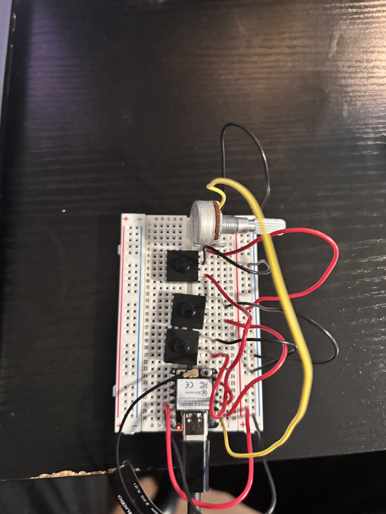

<div class="textcontainer">
<p class="margin"></p>
<h2 class="main-header">Week 9: Wired, Radio, WiFi, and Bluetooth (IoT)</h2>
<p class="margin"></p>
<h4 class="section-header">Networked Microcontroller Communication</h4>
<div class="section-container">
<p>This week I wanted to explore what happens when a microcontroller reaches beyond itself and controls something on a completely separate device. The most compelling target I could think of was my own laptop. There is a lot of potential in microcontroller to computer interaction, and I wanted to build something that solved a real, everyday problem rather than just a proof of concept blink.</p>
<p>The friction I kept running into was opening the same handful of apps every single time I sat down to work. I use <b>ChatGPT</b> (<i>I am not promoting AI use in this class, I am only using it as an example, I promise</i>), <b>Autodesk Fusion</b>, <b>VS Code</b>, <b>Spotify</b>, and <b>YouTube</b> on a daily basis. Pulling them up individually through Spotlight or the Dock adds up to a lot of small, repeated friction. I decided to build a physical shortcut panel, a <b>Workflow Controller</b>, that launches any of these apps with one press of a button.</p>
</div>
<h4 class="section-header">The Design Process</h4>
<div class="section-container">
<p>I went with <b>three buttons</b> wired to the microcontroller. Three buttons give <b>eight possible combinations</b>, including individual presses plus chords of two or all three held together, which covers my main workflow apps and then some. Rather than adding more physical buttons, chords let me pack more shortcuts into a compact footprint.</p>
<p>On the Mac side I mapped each chord to a specific workflow. <b>Button 1</b> alone opened <b>ChatGPT</b>. <b>Button 2</b> alone opened <b>VS Code</b>. <b>Button 3</b> alone opened <b>Autodesk Fusion</b>. <b>Buttons 1 and 2</b> held together opened <b>YouTube</b>. <b>Buttons 2 and 3</b> held together opened <b>Spotify</b>. The other chord patterns from three buttons were available in principle, but I did not assign actions to every possible combination for this build.</p>
<p>I also included a <b>potentiometer</b> for <b>macOS system volume control</b>. For apps like Spotify or YouTube, having a physical dial to spin instead of hunting for keyboard media keys felt like a genuinely useful addition. The pot does one thing only. Turn the dial, change the volume. No surprise behavior and no mode switching.</p>
</div>
<h4 class="section-header">Firmware Loop and Button Reading</h4>
<div class="section-container">
<p>The sketch file <i>workflow_controller.ino</i> in my <i>workflow_controller</i> firmware folder is where the main loop lives. Every pass through <i>loop</i> refreshes WiFi, runs the WebSocket client, updates reachability when WiFi is up, prints an occasional status line to Serial, then calls <i>inputsLoop</i> with two callbacks. Those callbacks, <i>onChord</i> and <i>onPot</i>, are what actually try to send a chord or a pot value over the socket when the path is valid. The LED helper runs last so I get quick visual feedback.</p>
<pre>
void loop() {
wifiStaLoop();
wsTransportLoop();
const bool wifi_ok = (WiFi.status() == WL_CONNECTED);
if (wifi_ok) {
if (!g_pot_adc_reconfigured_after_wifi) {
inputsConfigurePotAdc();
g_pot_adc_reconfigured_after_wifi = true;
}
const unsigned long now = millis();
if (now - g_last_reach_check_ms &gt;= kReachabilityCheckIntervalMs) {
g_last_reach_check_ms = now;
g_reachability_ok = checkInternetReachable204();
}
} else {
g_reachability_ok = false;
g_pot_adc_reconfigured_after_wifi = false;
}
const bool show_connecting_pulse = !wifi_ok || !g_reachability_ok;
g_led.setConnectingPulse(show_connecting_pulse);
if (kSerialStatusIntervalMs &gt; 0) {
const unsigned long now = millis();
if (now - g_last_serial_status_ms &gt;= kSerialStatusIntervalMs) {
g_last_serial_status_ms = now;
printStatusLine();
}
}
inputsLoop(onChord, onPot);
g_led.update();
}
</pre>
<p class="caption">Main loop from <i>workflow_controller.ino</i>. Button and pot handling are delegated to <i>inputsLoop</i> each cycle.</p>
<p>Button reading and chord logic live in <i>inputs.cpp</i>. Each pin is read into a raw mask, then debounced into a stable mask. The intent state machine waits through the collection window, picks the best simultaneous mask, then emits a chord string that the WebSocket layer sends. The same module averages the potentiometer ADC and applies a deadband before calling <i>onPot</i>.</p>
<pre>
static uint8_t readRawButtonMask() {
uint8_t mask = 0;
if (readButtonPressed(kPinButton1)) {
mask |= 1u;
}
if (readButtonPressed(kPinButton2)) {
mask |= 2u;
}
if (readButtonPressed(kPinButton3)) {
mask |= 4u;
}
return mask;
}
static uint8_t readDebouncedButtonMask() {
const uint8_t raw = readRawButtonMask();
const unsigned long now = millis();
if (raw != g_candidate_mask) {
g_candidate_mask = raw;
g_debounce_deadline_ms = now + kButtonDebounceMs;
}
if (now &gt;= g_debounce_deadline_ms) {
g_stable_button_mask = g_candidate_mask;
}
return g_stable_button_mask;
}
void inputsLoop(ChordHandler on_chord, PotHandler on_pot) {
updateIntentFsm(on_chord);
updatePotentiometer(on_pot);
}
</pre>
<p class="caption">Excerpt from <i>inputs.cpp</i>. Raw reads become a debounced mask, then <i>updateIntentFsm</i> turns stable masks into chords. <i>inputsLoop</i> ties chord emission and pot updates together.</p>
</div>
<h4 class="section-header">Implementation</h4>
<div class="section-container">
<p>The microcontroller is a <b>Seeed XIAO ESP32 C3</b>. It joins my home network over <b>WiFi</b> as a station and opens a persistent <b>WebSocket</b> connection to a <i>Python</i> server running on my Mac. When a button is pressed, or a chord is held, the ESP32 builds a small <i>JSON</i> message and sends it over that WebSocket. The <i>Python</i> server receives the message, identifies the chord, and fires the matching macOS action, launching an app, opening a URL in Chrome, or adjusting volume.</p>
<p>The <b>potentiometer</b> is read on pin <b>D0</b>. The firmware averages several ADC samples to smooth out electrical noise because the ESP32 ADC and its WiFi radio share silicon, which introduces noise when the radio is active. The 0 to 4095 ADC range maps to a 0 to 100 percent volume scale, and the Mac side executes a one line <i>AppleScript</i> via <i>osascript</i> to set system output volume. The pot worked. There was a small delay between turning the dial and hearing the volume respond, but it was perfectly usable for what I needed.</p>
<p>The button path has stricter gating than the pot. Before sending a chord, the firmware first confirms that an <b>HTTP 204 reachability probe</b> succeeds, which verifies internet connectivity, and that the WebSocket to the Mac is open. The pot only requires the WebSocket to be alive, which is useful on captive networks where the internet probe can fail while the local LAN link to the laptop is still healthy.</p>
<p>An <b>intent collection window</b> in the firmware waits a short period after the first button press before deciding which chord was entered. This way, if two buttons are pressed nearly simultaneously, the firmware sees the full set of pressed inputs rather than reacting only to the first one it catches.</p>
<div class="center-column">
<p></p>
</div>
<p class="caption">Wiring of the controller, buttons on pins D5, D1, and D2 using internal pull ups, potentiometer wiper on D0 with 3.3 V supply.</p>
</div>
<h4 class="section-header">Demo</h4>
<div class="section-container">
<p>The video below shows the controller running live, button presses triggering app launches on the Mac and the potentiometer adjusting system volume in real time.</p>
<div class="center-column">
<video class="project-img" controls playsinline preload="metadata">
<source src="./demo_of_controller.mp4" type="video/mp4">
Your browser does not support the video tag.
</video>
</div>
<p class="caption">Live demo of the Workflow Controller. Pressing buttons launches designated apps on macOS, and the potentiometer controls system volume.</p>
</div>
<h4 class="section-header">What Worked and What Did Not</h4>
<div class="section-container">
<p>The <b>software and networking side held up well</b>. The WebSocket connection was stable, chord messages were dispatched correctly, apps launched on the Mac as intended, and the <i>Python</i> server handled everything cleanly. The potentiometer volume control worked smoothly enough for real use despite the slight latency.</p>
<p>The <b>buttons were the problem</b>. They were flimsy and inconsistent. Getting a reliable GPIO read often took multiple presses. Occasionally pressing one button would register as a neighboring button's input, launching the wrong app entirely. The intent window helped with multi press chords in theory, but unreliable contacts made it hard to tell whether a chord read was two intentional simultaneous presses or just electrical noise from a single button making a bad connection.</p>
<p>Two of my three buttons became too unreliable to include in the demo. I pulled them off the breadboard and moved the one working button to different positions to show that pressing it in a given slot triggered the corresponding app. That is not how the controller was designed to work. I should not have needed to manually reposition hardware mid demo to demonstrate functionality that was supposed to just work. The concept was proven, but the execution was limited by the hardware.</p>
</div>
<h4 class="section-header">What I Would Fix</h4>
<div class="section-container">
<p>The answer is straightforward. <b>Better buttons</b>. Proper tactile, clicky, through hole switches with clean positive actuation would solve almost every issue I ran into. Contacts that close reliably on a single press would make chord detection actually reflect user intent instead of contact noise, and the demo would have run as designed from the start. The firmware, networking stack, <i>Python</i> server, and macOS integration all worked. The buttons were the single point of failure, and also the easiest component to swap out in a next iteration.</p>
</div>
</div>